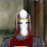

|
Freeport Militia の管轄は東西フリーポート。そのどこかに目的の人物がいるはずだが・・・・。 最も可能性が高いのは、やはり Militia House だろう。何のことはない、Militia の拠点だ。以前、特に用もなくふらりと訪れたことがある。中にはあの Sir Lucan をはじめ、Militia が掃いて捨てるほどいらっしゃった。一発殴ったら３０倍になって返って来ると思って間違いない。自殺の名所になる日も近いぞ。 そもそも街を巡回している Militia たちは、ろくすっぽ話もしない奴らばっかりだ。だが Militia House の中となれば、数々の重鎮がそろっており、目的の男が Hall of Truth のスパイとして潜り込む価値も十分にあるだろう。
見学者のそぶりで Militia House に侵入。突き刺さる視線は冷たい。まあ当然だ、俺が Hall of Truth の者であることぐらいは向こうにも知られているだろう。そっちがその気ならこっちも無視するまでだ。
そして俺は見つけた。他の連中とは明らかに様子の違う、心なしか優しげに俺を見ている男を。 |
|  | Guard Alayle | |
| Ssshhh!! Pipe down. The others might hear you. You must have something for me. Kalatrina must have given you something if you serve the Hall of Truth. If you have nothing, please leave. You will blow my cover. | ||
| しーーーーっ！！ 黙るんだ、他の者に聞こえるかも知れない。私に何かあるのだな？ もし君が Hall of Truth に仕える者であれば、Kalatrina から何かを預かっているのだろう。何もないのであれば、どうか立ち去ってくれ。君がいると私の正体がばれてしまう。 | ||
|
おっと、そうだった。俺は他の Militia 兵から影になるように立ち、Kalatrina からの手紙を渡す。 手紙に目を通した Alayle の顔がさっと青ざめたように見えた、のは気のせいだろう。何せ顔は完全に兜で隠されている。が、Militia への単独潜入を任されるほどの男であっても青ざめる内容であることは、疑う余地もない。 それでも彼は完全に平静を取り繕うことに成功した。やはり格の違いというものか。折りたたまれたぼろぼろの書類を懐から取り出し、俺に握らせる。 |
| This is not good news. I must leave imediately. Here. Take this to Kala.. I mean my father. I found it on the floor of Sir Lucan D'leer's quarters. Thanks again messenger. I got this just in time. | ||
| それはよくない知らせだ。すぐに出なければならないな。ほら、これを Kala・・・ いや、そう、私の父に届けてくれ。Sir Lucan D'leer の宿所の床に落ちていたものだ。重ねて、どうもありがとう、使者よ。私は早いうちに帰るよ。 | ||
|
Your faction standing with SteelWarriors △ Your faction standing with GuardsofQeynos △ Your faction standing with CorruptQeynosGuards ▼ Your faction standing with TheFreeportMilitia ▼ Your faction standing with KnightsofTruth △ |
|
OK、じゃあ俺はこれを先に Kala・・・・いやいや、君の父さんに届けておけばいいわけだな。了解。 Hall of Truthに帰ろうとしたその時だ。一人の Militia 兵が、まさに今俺が開けたドアから現われた。 |
| Krazen Loosh | ||
| Hello Alayle. We just got a message from Qeynos. I think you should come with me. | ||
| いよぅ、Alayle。今ちょうど Qeynos からの通達を受け取ったところさ。ちょっと俺と一緒に来ないとならないんじゃないか？ | ||
| Guard Alayle | ||
| Oh no!! Its is too late!! Run!! | ||
| 何てことだ！！ 遅かったのか！！ 逃げろ！！ | ||
|
叫ぶなり、Alayle は Krazen に体当たりをかました。そのまま取っ組み合いになり、他の Militia たちが押し寄せ、そして Alayle が倒れ―――その後のことは覚えていない。Hall of Truth に辿りついた俺は、顔に背中に冷や汗を垂らしながら、全身で息をしていた。 ・・・・何てことだ。遅かったのか。遅かったんだ。我知らず、Alayle と同じ言葉を、俺は何度も繰り返していた。遅かったのか。馬鹿な・・・・こんなことが！！ Alayle は俺を逃がしてくれた。俺だけが生き残った。ああ・・・だがどの道、今の俺には・・・・Militia に勝つ力がない。そのことだけははっきりしている。逃げる以外にできることは何一つなかっただろう・・・・。 そうだ、この書類を Kalatrina に届けなければ。Alayle から託されたこの書類を。震える手で、開いてみる。 |
| A tattered filer | ||
|
....... .... ..... .. .... .......... ........ .... ... .... .......... ..... .... | ||
| ・・・・・・・あぶり出し？（笑） |